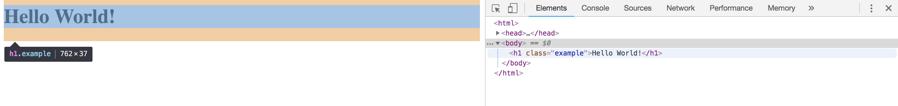

Headless Python Selenium With Behave
Testing software can often be seen as the least enjoyable part of the systems development life cycle. It is easy to see why. Developing the actual application that does the magic that the end user finds value in is indeed a very exciting core to the process. And yet, what you produce could be worthless if it doesn’t work for the user.
So let’s say you are working on an individual pet project. The fun part is coding it up and getting it to do something. Here, I’m going to use a simple Flask app that serves up some Wikipedia page count stats as an example. As a developer adds layers and new features and new bells and whistles and pipes and extension cords to their project, things which they haven’t developed in months or years can break, and if they don’t have a good testing suite in place, they won’t catch it and will serve out a degraded experience. That’s a dis-service to their users, but even to themselves, whose hard work has gone to waste because that piece of the project, which they might have spent many hours working on, might as well not even exist if it doesn’t work. Worse yet, if they break their app entirely, it could take hours and hours of searching for a bug.
If instead there is a systematic testing suite in place, each incremental change can be subjected to a battery of tests that help ensure that it is safe to continue to the next incremental change. This should not be the developer clicking through their app and making sure everything looks good. There are many awesome tools in place that allow for quick automated testing. Here, we provide a walk through to jump start a web developer on using Python and the selenium and behave libraries to provide a full browser test of their site.
Selenium
Selenium is a Python library that automates testing the final product of a webpage. Selenium integrates with various browsers and replicates the behavior that you expect from your users, all while measuring the response to that behavior against your expectations for how the site, when in its optimal state, should respond. It is as easy to install as
pip install selenium nose behave
Let’s start with a very simple example. Suppose you have webpage that simply serves this up:
<html>
<head>
<title>WikiViz</title>
</head>
<body>
<h1 class="example">Hello World!</h1>
</body>
</html>
Even if you didn’t want to get fancy and set up a nice file structure and
orchestrate your testing with tools such as behave and nose, you
could simply create a very straight-forward python script that runs
the selenium testing you need to ensure that your page is serving
the expected content.
If you are running these locally on your laptop, the following step isn’t necessary, you will just need to make sure you have Firefox installed. Selenium works with other browsers, but to keep this simple at first, we will focus on Firefox.
Headless on Ubuntu (skip this if using a Mac)
Skip this section if you don’t plan to run this on a remote linux-based server. In this example, I’m using my Cloud 9 IDE account which serves up containers with Ubuntu as the OS.
First we need to isntall the Xvfb package:
sudo apt-get install firefox xvfb
and the PyVirtualDisplay python library:
pip install selenium nose behave PyVirtualDisplay
Finally, you’ll need the geckodriver (they don’t include md5sums or rsa hashes to confirm authenticity, but use github to host and release which comes with a great deal of trust):
wget https://github.com/mozilla/geckodriver/releases/download/v0.21.0/geckodriver-v0.21.0-linux64.tar.gz
tar zxvf geckodriver-v0.21.0-linux64.tar.gz
chmod a+x geckodriver
sudo mv geckodriver /usr/local/bin/
Our first selenium assertion
Now we are ready for our first test. This test will do two things. First, it will cause selenium to try to access the webpage. If it can’t do so, it will fail. This means that a selenium tests automatically tells you whether or not your page is up and running right out of the box. Secondly, the test will assert that the very simple webpage example shown above is setting the title to ‘WikiViz’ as it should be.
If you are using the headless on your remote server, your code will look like this:
#!/usr/bin/env python
from pyvirtualdisplay import Display
from selenium import webdriver
display = Display(visible=0, size=(1000, 1000))
display.start()
driver = webdriver.Firefox()
driver.get('http://localhost:8080/')
assert driver.title == 'WikiViz'
driver.quit()
display.stop()
If you are running this in a local environment, such as on a Mac, and you like to watch selenium open the browser and walk through the tests, then your code would look like this:
from selenium import webdriver
base_url = "http://localhost:8080"
driver = webdriver.Firefox()
driver.get(base_url)
assert driver.title == "WikiViz"
Yes, it is that easy! OK, well, at least for the title. As your page gets more complicated, so will your testing, but overall the spirit of simplicity in the selenium testing scheme carries over. It’s the complexities of html/javascript that you will eventually need to worry about. But we will keep things simple here.
Expanding the tests
In order to make our example just a little more interesting, and give selenium something to do rather than just observe, let’s add a button to our simple home page that takes us to another page. Add the following just after the h1 entry:
<form>
<input type="button" value="results" onclick="window.location.href='/results'" />
</form>
In this next section, I’m going to make the tests a little more
complicated in structure, but for a good payoff. If you like to
keep your tests in a single script as above, you can simply expand
on that script. Here, I will show a simple example using nose
and behave libraries. This example was inspired by a slightly more
complicated (and well done) example (which doesn’t have the headless feature)
here,
but meant to be easier to dive into for those new to testing with selenium.
Create a file structure that looks as follows:
(env) tdj28:~/workspace/selenium_tests (master) $ tree .
.
├── features
│ ├── __init__.py
│ ├── pages
│ │ └── __init__.py
│ └── steps
│ └── __init__.py
└── simple_examples
└── xvfb_example.py
here’s some bash to make that happen:
mkdir -p selenium_tests/features
mkdir selenium_tests/pages
mkdir selenium_tests/steps
mkdir selenium_tests/simple_examples
touch selenium_tests/features/__init__.py
touch selenium_tests/pages/__init__.py
touch selenium_tests/steps/__init__.py
The simple_examples directory is where I put in some simple scripts
for testing a few features (or writing this blog post), but you definitely
don’t want something that sloppy in a production version of your code.
(Google init python files if you don’t know what those __init__.py files
are for.)
Step One: Define the Behavior
BDD development would have us define behaviors we expect of the site before we even begin to develop site. That’s a good place to start for selenium testing as well, where if these definitions are pre-existing, we can use them as our starting point. If not, we can easily create our own.
In the features directory, create a file called clickbutton.feature with
the following content:
Feature: ClickButton
Scenario: Click Away From Homepage
Given I navigate to the Home page
And I see that the pagename is WikiViz
And I see the header "Hello World!"
When I click the button
Then I see that the pagename is no longer WikiViz
This is the beauty of the behave library and behavior based testing in general.
We can use everyday language to describe our user’s experience, and then translate
that in to tests as we will see shortly. This enables non-technical folks to
contribute tests.
Note that in the above tests, the last line entry is a bit of a cheat on my part. The test really should, in that line, confirm in some way that it made it to the results page. So don’t do what I did there! If for example you click on the button and it takes you to a 404 error page, your test will still pass. I take that shortcut here only to keep this jump start example focused on a single simple html page.
Step Two: Turn the Behaviors Into Steps
In the steps folder, create a file called clickbutton_step.py. Note that
it has the same prefix clickbutton as the corresponding features file we
created above, that is required for each feature file. The contents of this
file will have:
from nose.tools import assert_equal, assert_not_equal, assert_true
from selenium.webdriver.common.by import By
@given('I navigate to the Home page')
def step_impl(context):
context.home_page.navigate("http://localhost:8080/")
@given('I see that the pagename is WikiViz')
def step_impl(context):
assert_equal(context.home_page.get_page_title(), "WikiViz")
@given('I see the header "Hello World!"')
def step_impl(context):
assert_equal(context.home_page.get_page_header(), "Hello World!")
@when('I click the button')
def step_impl(context):
context.home_page.click_button()
@then('I see that the pagename is no longer WikiViz')
def step_impl(context):
assert_not_equal(context.home_page.get_page_title(), "WikiViz")
So the pattern here is starting to become clear:
User experience ---> Steps ---> Page functions
We have chosen to create the steps before the page functions here because that is a natural way to proceed. The steps will tell you what functions you need to create, and then afterwards, create those functions with the narrow scope defined by the steps.
Step Three: Turn the Steps Into Implemented Functions
Let’s stick with our simple home page as detailed above. We can look behind the curtain of this page by using our browser’s developer console. On Chrome, for example, it is in settings > More Tools > Developer Tools. This gives you many great tools to inspect the code and help you locate elements in your code. For our simple example, that isn’t so necessary, but as this example is expanded to include javascript which makes the page more dynamic, these developer tools become very useful. In this screenshot below, for example, we see how it helps us identify elements of the code.

These elements become key as we find key elements to use in our testing.
In the pages folder, create a file called home_page.py with the following content:
from selenium.webdriver.common.by import By
from browser import Browser
class HomePage(Browser):
# Home Page Actions
def navigate(self, address):
self.driver.get(address)
def get_page_title(self):
return self.driver.title
def get_page_header(self):
return self.driver.find_element_by_class_name("example").text
def click_button(self, *locator):
self.driver.find_element_by_class_name("button").click()
Because the source code of our simple page assigns the first and only
h1 header by giving it the class “example”, that makes it easy
to find_element_by_class_name. If in fact we had multiple h1 elements
with that class, we would have to use the plural find_elements_by_class_name
instead, which returns a list that we could submit for testing (e.g.
we would know what the first h1 should be, the second, etc.).
So for our homepage, we have created the HomePage class, which inherits the Browser class we created previously, and we define the actions we will need on this page for testing. When we add other pages to our example web app in later blog entries, we will create a new file in the pages folder, one for each page. In this way, we keep the details nice and cleanly compartmentalized. If we have a subset of pages that share much in common, we can create a class for that subset, and then have individual pages inherit that class, and so on.
Also note that there are multiple ways we can identify elements, including
xpath. In this file, we add four tools associated with our homepage.
The first is a navigate function, the second returns the pagename,
the third returns the h1 element, and
the fourth clicks on the button we just added that will send us to a new page.
Step Four: Define The Browser
Before we can make use of the defined behaviors and expectations, we need to set up our browser and display (for headless).
Create the file features/browser.py with the following content
if you want selenium to run on your laptop or desktop in a way
that you can watch it run through the tests:
from selenium import webdriver
class Browser(object):
driver = webdriver.Firefox()
driver.implicitly_wait(15)
driver.set_page_load_timeout(10)
driver.maximize_window()
def close(context):
context.driver.close()
Here, I’ve made the page timeout ten seconds because if my page is taking longer than ten seconds to load, to me that is a pretty good reason for it to fail. I would actually recommend you being more generous than not, and instead build in timing features to test for load time rather than have the tests timeout as an indication that your page is slow, but again, this is meant to be a baseline example.
For those wishing to use headless testing (on a remote server, no live browser to watch), the above file will look like:
from selenium import webdriver
from pyvirtualdisplay import Display # Comment this out for live browser
class BDisplay(object): # Comment this out for live browser
display = Display(visible=0, size=(1000, 1000)) # Comment this out for live browser
display.start() # Comment this out for live browser
def stop(context): # Comment this out for live browser
context.display.stop() # Comment this out for live browser
class Browser(object):
driver = webdriver.Firefox()
driver.implicitly_wait(15)
driver.set_page_load_timeout(10)
driver.maximize_window()
def close(context):
context.driver.close()
Step Five: Putting it all together
Finally, we need to have an environment definition to tie everything together.
This will tell behave what page classes to import and tell it what to
do before and after the tests are ran.
If the features folder, create a file called environment.py with the content:
from selenium import webdriver
from browser import BDisplay # Comment this out for live browser
from browser import Browser
from pages.home_page import HomePage
def before_all(context):
context.display = BDisplay() # Comment this out for live browser
context.browser = Browser()
context.home_page = HomePage()
def after_all(context):
context.browser.close()
context.display.stop() # Comment this out for live browser
In the folder above features, assuming you’ve installed behave via pip already,
simply run behave. If all goes well, we get an output that indicates the tests
ran and their pass/fail status:
(env) tdj28:~/workspace/selenium_tests (master) $ behave
Feature: ClickButton # features/clickbutton.feature:1
Scenario: Click Away From Homepage # features/clickbutton.feature:3
Given I navigate to the Home page # features/steps/clickbutton_steps.py:4 0.112s
And I see that the pagename is WikiViz # features/steps/clickbutton_steps.py:8 0.005s
And I see the header "Hello World!" # features/steps/clickbutton_steps.py:12 0.046s
When I click the button # features/steps/clickbutton_steps.py:16 0.112s
Then I see that the pagename is no longer WikiViz # features/steps/clickbutton_steps.py:20 0.009s
1 feature passed, 0 failed, 0 skipped
1 scenario passed, 0 failed, 0 skipped
5 steps passed, 0 failed, 0 skipped, 0 undefined
Took 0m0.283s
Find the code here
For your convenience, the selenium code is collected here.